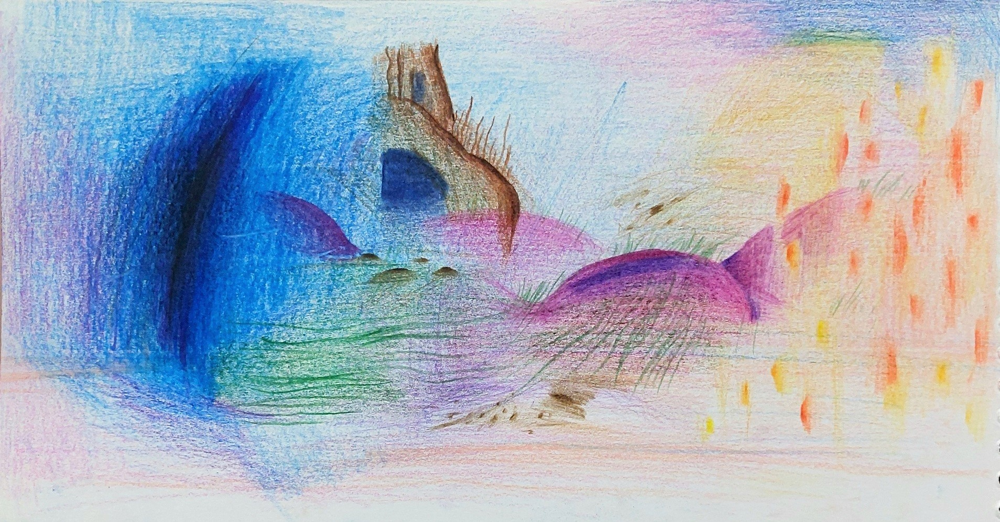
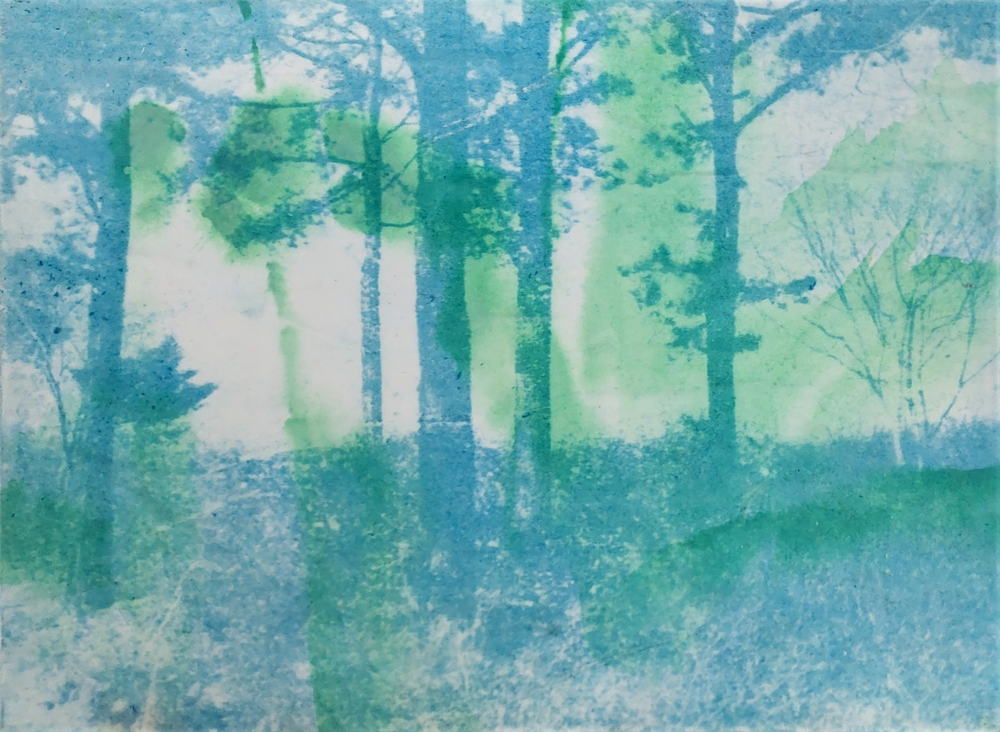

作品標題：Blue-ing in Everywhere.
創作年份：2024
媒材類別：詩詞散文

Some blue, transparent or deep, azure or navy...
一些藍色，輕透的也好，深邃、湛藍的也好⋯⋯
最近抬頭或是翻書，只要看到自然贈與的藍色景象，
心裡就會感到悸動的搔癢，
就像微風拂過的時後，手掌心上湧出一股暖暖的泉水。～～☄︎☄︎࿓𓂝
既⋯也⋯⋯。
可以是拘謹的；
可以是自由的；
可以是憂鬱的；
可以是治癒的；
可以是寧靜的；
可以是跳動的；
可以是黎明時分；
可以是夜幕低垂；
可以是溪流，可以是深海；
可以是化學，可以是自然。
好多好多⋯，
秩序所需的準則 and 邊界，融合所需的包容與同理。
清醒的，虛幻的⋯⋯⋯，說不完呢，藍色。
藍色就是這樣的存在呀，就是被需要，就是被喜愛⋯⋯，
有些東西是不會改變的，雖然我還說不清楚。

望近，望遠
看著天空的天際線，
有一條由雲朵組成；
有一條是陸上的田邊；
有一條是山的彎弧；
又有一條是大樓的塊岩⋯⋯，
不知道要對準哪一條，
風景視窗才會平平的，不傾斜。
可能是最延綿的那一條線，
用眼睛努力對準，按下快門。
看著天空，劃出飛白的一點，
忍不住回看的雲層，
厚重的像個屋簷，
也像棉被蓋在山巒的緩緩凹凸上，
我忍不住回望的還有，
還有再雲層之上的薄霧，似薄霧的雲層透出的藍，
紫紫藍藍白白的天空，
乾淨的分不清遠近，
湛藍的好似透明水彩的暈染。
我奔跑在這份寧靜當中，
可能是簡單的自由，充滿了愉悅，
冷冷的空氣也好似在跟車鳴歡快樂的賽跑，
包裹著狂喜。
明明沒有發生些什麼。
然後，我憶起昨日的談笑，微風和細雨搔弄著雙頰，
好似入夜的天空，在微微的發燒，
夕陽泛著紫紅也不願退去。